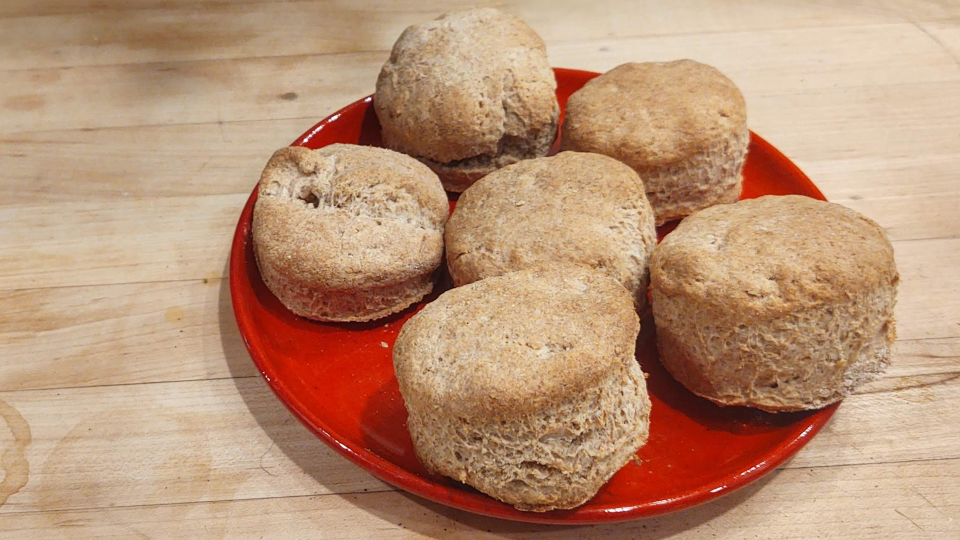
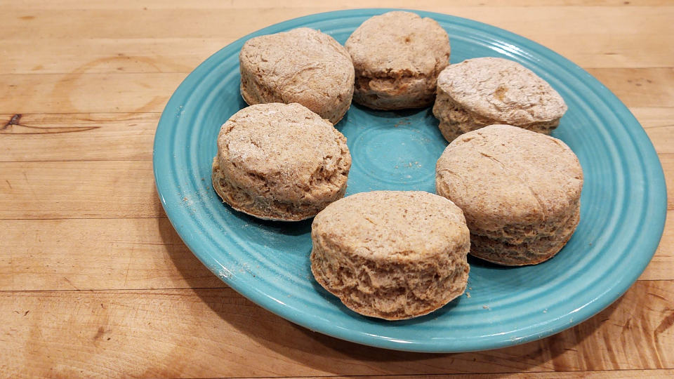

Nicholas LaCara – 21 May 2020 – Boston, ma
I'm not much of a baker, but I decided at one point a few weeks ago that I would make my girlfriend some biscuits (the American scone-like kind, not cookies). We have a lot of spelt flour lying around for some reason, so I adapted a few biscuit recipes I found online until I got something that worked and that I also liked (this one being the primary influence). They are excellent with butter, honey, and a glass of milk.
Buttermilk spelt biscuits.
Ingredients
- 2 cups spelt flour
- ½ teaspoon salt
- 4 to 4½ teaspoons baking powder
- 1 teaspoon honey (or to taste)
- ¼ cup (4 tbsp) butter, chilled
- Just less than a cup of buttermilk
Instructions
-
Preheat your oven to 410–425°F (the lower end works best for me and my oven).
-
In a medium bowl, mix together the flour, salt, and baking powder.
-
Add the honey, and mix until it is evenly distributed.
-
Cut in the butter.
-
Everything I've read says you want the butter to be cold. I recommend freezing the butter ahead of time and using a cheese grater to get it into fine pieces that I then mix into the flower by hand.
-
Add in the buttermilk a bit at a time until the mixture comes together. I don't think I've ever needed the full cup. The resulting dough should be somewhat wet and sticky.
-
Put the dough on a well-floured surface and knead it a few times (but not too many!). Using your hands, flatten the dough to a thickness of about ¾ in to 1 in.
-
Cut the biscuits.
-
I don't have a special biscuit cutter (which is evidently recommended), but a sturdy glass does the trick well enough. The biscuits will build up some pressure in the glass and blow some flour around, though.
-
Make sure you push straight down, and try not to twist the glass or the biscuits will not rise properly. (Putting a bit of flour on the rim of the glass helps, too.)
-
Bring the scraps together to cut out more biscuits. I find I do sometimes need to knead them together to get them to stick.
-
Place in the oven on a cookie sheet and let bake for 12 to 15 minutes. In my oven, at 410°, they come out a bit to dry if I leave them much longer than 12–13 minutes.
Notes & variations
- Some people like sweeter biscuits than I do. You can add as much honey as you like; I see some people suggest up to a tablespoon of sweetener.
- I've made these a couple times using one cup spelt flour and one cup oat flour instead of two cups of spelt flour, and they were fantastic. They don't rise as much, as the photo below shows, but the oaty flavor is very nice.
Spelt–oat biscuits